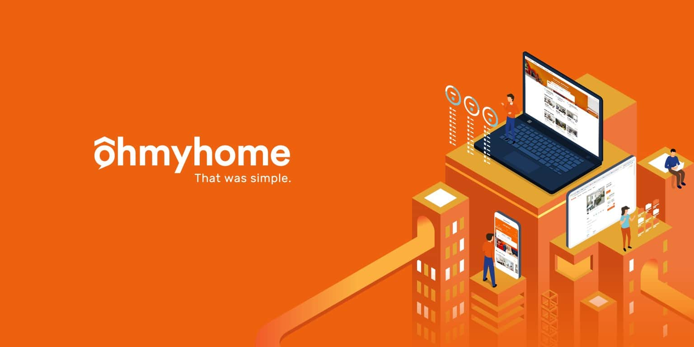

My Internship Experience At Singapore's First Proptech Company
Day in a life and lessons learnt!


Introduction
My first tech internship was with Singapore's first Property Technology (proptech) startup - Ohmyhome (OMH). This internship imparted a lot of learning points and experiences and I thought it would be nice to share some of them with you.
Picture of ohmyhome from linkedin
Ohmyhome is a startup based in Singapore, with branches in Malaysia and the Philippines. It is an ecosystem for all your property needs. Ohmyhome differs from other property companies like Propnex or PropertyGuru because of its tech-driven approach and I believe OMH will continue to disrupt the property scene. Proptech is a digital transformation of real estate. Examples include home management software ( Internet of Things, IoT) or bridging the gap between supply and demand across geographical boundaries. Read more here if you are interested in proptech.
Content Page
Overview of OMH my internship
some of the softwares I picked up from the data team
Just some background, I joined OMH as a Data Analyst Intern. Due to the nature of the start-up, my role wasn’t confined to solely creating dashboards or interpreting data. OMH allowed me to explore a variety of data-related projects. Some of which include data categorising with Amplitude, engineering databases, property research for business development, data visualisation with Google Data Studios, and more.
Being new to the tech scene, the exposure I had to these different facets of data was incredibly insightful. Every project was a new ballgame and although I had to learn things from scratch, I found it riveting. This is unlike other internships that my friends did with bigger companies. Their tasks revolved around a predefined job scope with little room to venture into other related fields.
With that in mind, settling for an internship with lesser exposure is not a negative thing. It boils down to your goals of the internship; a trade-off between specialisation and exposure. In my context, I wanted to experience as many fields in tech as possible which was well aligned with the OMH internship.
After about 2 months of interning with the Data Team, the Backend Team asked if I would like to join them. They had a mountain of tasks piling up and they needed some help clearing them. I was left in a real quandary. On one hand, the thought of being introduced to new applications was intriguing. On the other hand, I was unsure if I could manage, having no experience in that field. I also didn’t want to be an additional burden to occupy more of their time. No doubt it was a big step but I decided to take a leap of faith!
For the remaining 3 months, I worked as the Backend Engineering Intern and Oh My Goodness, the learning curve was steep! I lacked a rudimentary understanding of backend engineering, DevOps, or microservice architectures. In addition, I had to pick up a new programming language as all the backend code was in Go.
some of the softwares I picked up from the backend team
Under the guidance of the seniors (and Udemy courses), I managed to grasp the concepts better. Over the 3 months, I learnt about applications like Postman to test out APIs, Git for version control, SourceTree as the Git GUI, Bitbucket for hosting code, Elastic Search, HTTP request concepts, and many many more. And that sums up a bird's eye view of my 5 months at OMH.
Day in a life of a OMH tech intern
agile vs waterfall framework from trustradius
Starting my day off with our daily Standup, we update the team on the tasks we have done, tasks we are doing, and the presence of any roadblocks. It lasts no longer than 10 mins. This is part of a project management framework called Agile which encourages synergy among the team at all stages of product development. This is in contrast to the traditional waterfall model where more emphasis is placed on individual performance. This team aspect is just one of the pillars in the Agile framework, there are other pillars such as customer involvement. I won’t be going in-depth about this framework in this blog post but feel free to read more about the Agile and Waterfall methodologies here.
Following morning standup, I would arrange short check-ins with the senior backend engineers to review the task that I am working on to seek their advice. They are all very welcoming and patient people and have been a huge help to me. I believe it is crucial to find yourself a mentor or seniors who will angle you and your plans in the direction for success (your own definition of success) as they themselves have been through a similar process, they definitely know better.
some of the bonding activities we did at OMH
Lunch is around 12 pm and we usually eat at the food center situated below the office. There isn’t a variety of food options there and honestly, it's one of my biggest gripes working there! I guess I am lucky enough because the other interns also feel the same and we do travel out to break from the monotony. We do take short breaks too, which are littered throughout the day where we raid the pantry for drinks and snacks!
I get off work at about 6 pm and head home. I have crazy amounts of respect for the full-timers here because they are so hardworking. Some of them reach the office before 9 am and leave late after 6 pm -- I never see them leaving the office! Of course, they are not forced to come in early and leave late, they do it willingly.
What about team building activities you might wonder. Well, before the heightened alert Covid measures, we had Work Out Thursdays and Zumba Mondays. What a nice way to unwind after a long day of work with the team. If we get lucky, our bosses would even treat us to bubble tea and cakes. Actually, there have been many occasions where we got free food! Definitely a boost to our morale.
What I've learnt from this internship
My 5 months zoomed by in a flash and I’ve learnt so much. If I had to narrow it down to 3 things, they would be
Content Page
Macroview of how systems function
I had the opportunity to learn about new softwares and how they all complement each other in a system. It is more on the technical side of things, but I finally had the chance to understand how they interact to execute certain features. I love to understand such perspectives because in the future if I do take the entrepreneur route, I would need such insights. The theoretical knowledge to construct the most robust system that is scalable and cost-effective is vital.
On top of that, the big picture view of things helps me refocus. At times, I feel that I am too busy trying to solve a bug or implement a new feature that I forget to appreciate the bigger picture that is forming. The end goal of the product should direct my thinking and better improve the way I write my code and have the user’s best interest at heart. Indeed, having a macroview keeps me in line with the target goals.
Grit
I dare say that this might be my biggest takeaway from their whole journey. Technology is ever-changing and (there is a good probability) all the practical knowledge that I’ve learnt through this internship might not apply to my future job. But spending days trying to fix a bug, googling concepts, and reading StackOverflow posts allowed me to live in the struggle and press on when the going gets tough. The tenacity to keep trying, especially in the uncertain, is something that will stay with me through university and future jobs.
This idea of trying my best and trying to figure things out on my own was ingrained into me especially in my last 3 months there. As previously mentioned, the initial phase of my backend journey was an onerous one. I had spent almost 2 weeks experimenting on how to implement a simple feature to the web application. They were the longest 2 weeks of my life! Fast forward 3 months, I managed to make big strides in understanding the monstrosity that is the backend code. Nevertheless, there are still so many things I don’t understand, but because I persevered, I am much better than I ever was.
I guess at the end of the day, it's not about learning everything (tech-related) under the sun, but more about how to pick it up well and fast. There is nothing I can do to change the protean nature of the ongoing tech landscape. All I can do is acquire skills that help me adapt to the changing technology. As Singapore’s Ministry of Education always says, we live in a VUCA (Volatile, Uncertain, Complex, Ambiguous) world where we need to learn, unlearn and relearn. This has never been more true in the tech scene. Only our values will hold true.
Just do it, I was never ready
When I applied for the internship, I was clearly not the most qualified candidate. Harvard's CS50 on Edx and Udacity’s Python Beginner’s course were all I had in my coding arsenal. Yet, I still went ahead knowing I was not ready to take on a full tech internship. But with many strokes of luck, OMH gave me the opportunity to intern and learn.
"The impediment to action advances action. What stands in the way becomes the way" - Marcus Aurelius, Stoic philosopher
I knew I was underqualified. I knew there would be a crisis period of much self-doubt. I knew I had to put in extra effort to study hard and get up to speed. However, through this internship I have come to understand that the obstacle is the way. Simply running into problems forced me to take action to resolve them which will inevitably lead me to think, behave and choose differently. The problem becomes a catalyst for me to actualise the life I want. It pushed me from my comfort zone, that is all.
Of course, it wasn’t all my hard work. The availability of a mentor or just someone to guide me was so important and I am glad that OMH has a culture of collaboration and mentorship. Whenever I review my completed task with the senior engineers, they would challenge my thinking and nudge me in the direction to better my code, like a torchlight that helps me identify blindspots and reexamine my assumptions.
Conclusion
I am grateful for the avenue to kick start my foray into programming and tech in general. I am grateful for the friends I have made through this internship. And, I am grateful for the opportunity to learn and grow. For your information, I met Silas, the other blogger, at OMH and we started Coding Cucumbers together! (Internships are a great way to meet motivated people who you can initiate projects with!)
If you have the chance, I strongly encourage you to try out an internship. It would surely help you to figure out if a tech job is suitable for you or help zoom in on a field in the tech industry is e.g. front-end, back-end, data. Take advantage of the internship programmes that your school offers or even try cold-emailing companies. I believe one quality that interviewers always look out for, even if you don’t have the requisite skills, is the eagerness to learn. By showing you are a self-directed learner, I am sure many companies would take a chance on you.
Thank you for making it this far. I hope you enjoyed reading my reflections! Stay cool, Cucumbers!